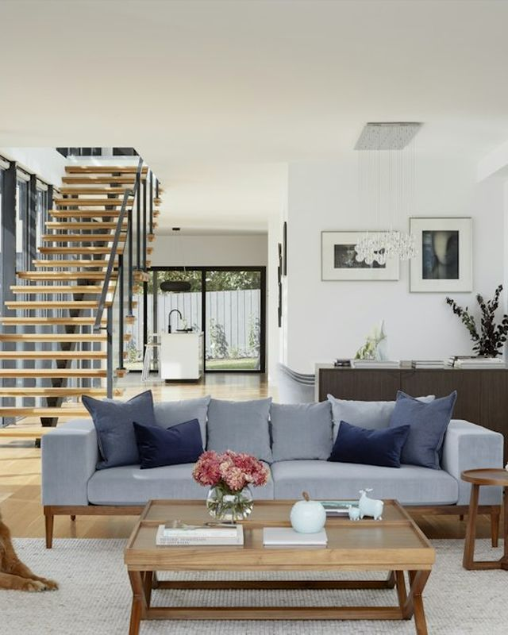

Rekonstrukce bytu
Od bourání bytového jádra po poslední lištu. Nové rozvody vody, odpadů a elektřiny, koupelna a WC, podlahy, omítky, dveře, malování. Řešíme i souhlas SVJ a ohlášení.
- Obvykle 6–10 týdnů
- Od cca 12 000 Kč/m²
- Prohlídka a rozpočet zdarma